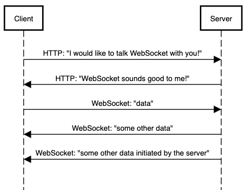
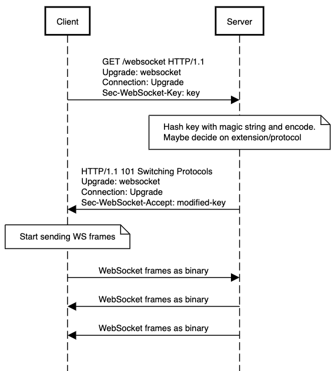
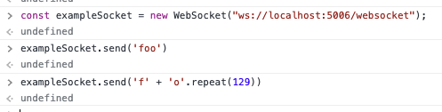
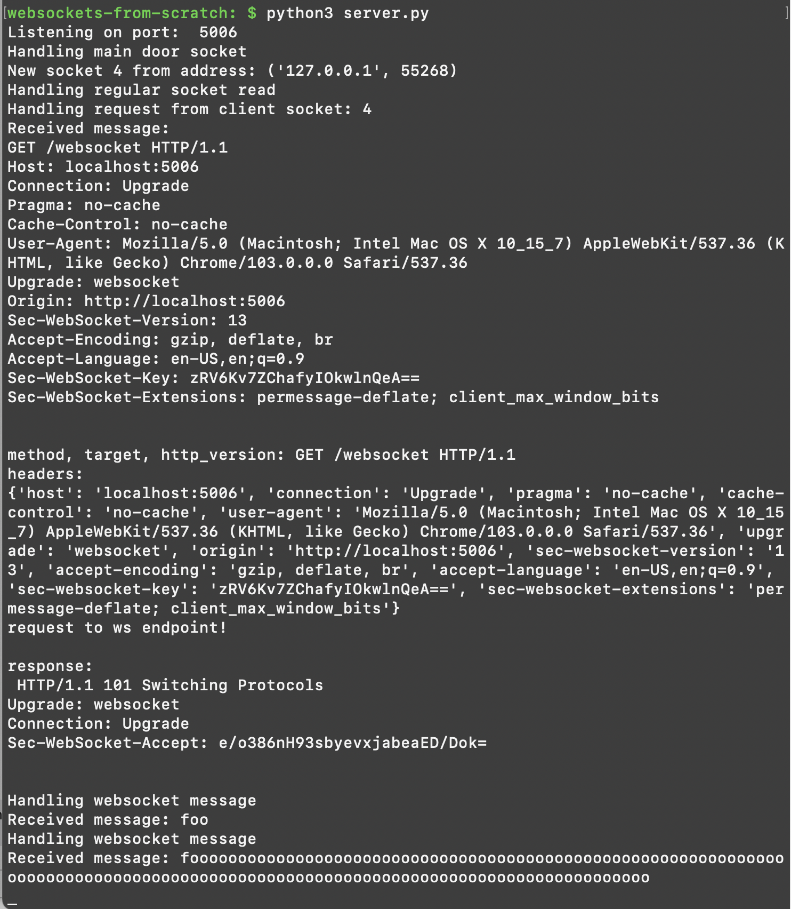

Writing a toy WebSocket server from scratch
...so you can appreciate the libraries that do it for you
Aug 28, 2022 · 4153 words · 20 minutes read
WebSocket (WS) connections are pretty neat. I’ve gotten to play around with them before, both for personal and professional projects, but my view has mostly been at a high level and concerned mainly with the things that I can build on top of them. I haven’t spent much time digging through the protocol.
I thought it would be pretty interesting to build a toy WS server from scratch. Like many other projects, I find building a toy system to be such a good way to learn more, and I’ll be talking about this toy WS server (and some of those things I learned) in the rest of the post.
WebSocket
The main idea behind the WebSocket protocol is bi-directional communication. Rather than the usual request/response lifecycle, with a client asking a server for resources, WebSockets allow for messages to be sent in either direction. Think of a chat application, where the client should be notified by the server that there’s a new message for them. You could have the client long poll, continuously asking the server if there’s anything new, but with a WebSocket connection, the server can independently send those new messages to the client, allowing the client to passively receive when it needs to.
The WebSocket connection flow
WebSocket connections are initiated via a regular HTTP request from the client that indicates it would like to switch, or upgrade, to talking via a WebSocket connection. It’s kind of like sending someone a Slack message asking if they want to hop on a quick video call — it’s still communicating over the computer, and you’re using one method to initiate the next.
The steps to the flow are the following:
- Client sends an HTTP request to the server indicating it would like to switch to WS
- Server responds saying it’s OK to switch to WS
- Client and server can start sending WS frames back and forth

The real steps are of course a little more complicated, including the origin, what and how to upgrade, protocols, extensions, and a few other pieces of data. A typical handshake request may look like this:
GET /chat HTTP/1.1
Host: server.example.com
Upgrade: websocket
Connection: Upgrade
Sec-WebSocket-Key: dGhlIHNhbXBsZSBub25jZQ==
Origin: http://example.com
Sec-WebSocket-Protocol: chat, superchat
Sec-WebSocket-Version: 13
And a typical response:
HTTP/1.1 101 Switching Protocols
Upgrade: websocket
Connection: Upgrade
Sec-WebSocket-Accept: s3pPLMBiTxaQ9kYGzzhZRbK+xOo=
If you’re interested in more details, I’d recommend reading through RFC6455 — it’s not too bad to dig through!
What’s this Sec-WebSocket-* business? It’s one of the ways that the server can
prove to the client that it received the handshake and it’s responding to that
request. The server does so by hashing the key with a well-known magic string,
258EAFA5-E914-47DA-95CA-C5AB0DC85B11, then base64 encoding it and sending it
back as the handshake response. If you’re curious, you can see section 1.3 for more details,
and I’ll have an example in the later code as well.
This means the full conversation looks a little more like this:

A toy websocket server
I started with a basic idea: what’s the smallest server we can build that can handle an incoming websocket message? For example, what would it take to handle the following, which is the most basic way to initiate WS communication via JavaScript:
const exampleWS = new WebSocket("ws://localhost:5006/websocket");
exampleWS.send("foo");
These two little lines are deceiving; there’s a lot going on under the hood.
First, for this toy project, it’s helpful for myself to define two things:
Goal: write a basic server that can handle the WS handshake and parse an incoming WS frame to see the message sent from the client
Non-goals: writing a robust or real HTTP server, writing a fully compliant WS server, or handling all edge cases
With that in mind, the steps will look something along these lines:
- Make a very basic HTTP server to handle incoming HTTP requests
- Handle the initial handshake request and the connection upgrade
- Actually parse the incoming WS frames
Starting with HTTP
We can start by writing a very basic HTTP server that can handle incoming requests. This example is very much inspired by Beej’s Guide to Network Programming1, and the flow is the following:
- Have one socket that listens for incoming connections
- When there’s a new connection on it, create a new socket for listening to it
- When the new sockets are ready to read from, handle the incoming requests
This isn’t very exciting, but we can roll a very rough server in a big handful of lines:
"""
Very basic HTTP server that just listens on a port and responds.
"""
import socket
import select
TCP_IP = '127.0.0.1'
TCP_PORT = 5006
BUFFER_SIZE = 1024 * 1024
DEFAULT_HTTP_RESPONSE = (
b'''<HTML><HEAD><meta http-equiv="content-type" content="text/html;charset=utf-8">\r\n
<TITLE>200 OK</TITLE></HEAD><BODY>\r\n
<H1>200 OK</H1>\r\n
Welcome to the default.\r\n
</BODY></HTML>\r\n\r\n''')
def main():
'''
Creates the front-door TCP socket and listens for connections.
'''
# We can have a main socket that listens for initial connections.
tcp_socket = socket.socket(socket.AF_INET, socket.SOCK_STREAM)
tcp_socket.setsockopt(socket.SOL_SOCKET, socket.SO_REUSEADDR, 1)
tcp_socket.bind((TCP_IP, TCP_PORT))
tcp_socket.listen(1)
print('Listening on port: ', TCP_PORT)
input_sockets = [tcp_socket]
output_sockets = [] # Maybe use, we'll see
xlist = [] # Not using
while True:
# Get the sockets that are ready to read (the first of the
# three-tuple).
readable_sockets = select.select(input_sockets,
output_sockets,
xlist,
5)[0]
for ready_socket in readable_sockets:
# Make sure it's not already closed
if (ready_socket.fileno() == -1):
continue
if ready_socket == tcp_socket:
print('Handling main door socket')
handle_new_connection(tcp_socket, input_sockets)
else:
print('Handling regular socket read')
handle_request(ready_socket, input_sockets)
def handle_new_connection(main_door_socket, input_sockets):
# When we get a connection on the main socket, we want to accept a new
# connection and add it to our input socket list. When we loop back around,
# that socket will be ready to read from.
client_socket, client_addr = main_door_socket.accept()
print('New socket', client_socket.fileno(), 'from address:', client_addr)
input_sockets.append(client_socket)
def handle_request(client_socket, input_sockets):
print('Handling request from client socket:', client_socket.fileno())
message = ''
# Very naive approach: read until we find the last blank line
while True:
data_in_bytes = client_socket.recv(BUFFER_SIZE)
# Connection on client side has closed.
if len(data_in_bytes) == 0:
close_socket(client_socket, input_sockets)
input_sockets.remove(client_socket)
client_socket.close()
return
message_segment = data_in_bytes.decode()
message += message_segment
if (len(message) > 4 and message_segment[-4:] == '\r\n\r\n'):
break
print('Received message:')
print(message)
(method, target, http_version, headers_map) = parse_request(message)
print('method, target, http_version:', method, target, http_version)
print('headers:')
print(headers_map)
# For now, just return a 200. Should probably return length too, eh
client_socket.send(b'HTTP/1.1 200 OK\r\n\r\n' + DEFAULT_HTTP_RESPONSE)
close_socket(client_socket, input_sockets)
# Parses the first line and headers from the request.
def parse_request(request):
headers_map = {}
# Assume headers and body are split by '\r\n\r\n' and we always have them.
# Also assume all headers end with'\r\n'.
# Also assume it starts with the method.
split_request = request.split('\r\n\r\n')[0].split('\r\n')
[method, target, http_version] = split_request[0].split(' ')
headers = split_request[1:]
for header_entry in headers:
[header, value] = header_entry.split(': ')
# Headers are case insensitive, so we can just keep track in lowercase.
headers_map[header.lower()] = value
return (method, target, http_version, headers_map)
def close_socket(client_socket, input_sockets):
input_sockets.remove(client_socket)
client_socket.close()
return
if __name__ == '__main__':
main()
Not very robust, but life is short and toy projects are for fun! What does that look like from the client side?
~: $ curl -v 127.0.0.1:5006
* Trying 127.0.0.1:5006...
* Connected to 127.0.0.1 (127.0.0.1) port 5006 (#0)
> GET / HTTP/1.1
> Host: 127.0.0.1:5006
> User-Agent: curl/7.77.0
> Accept: */*
>
* Mark bundle as not supporting multiuse
< HTTP/1.1 200 OK
* no chunk, no close, no size. Assume close to signal end
<
<HTML><HEAD><meta http-equiv="content-type" content="text/html;charset=utf-8">
<TITLE>200 OK</TITLE></HEAD><BODY>
<H1>200 OK</H1>
Welcome to the default.
</BODY></HTML>
* Closing connection 0
Nice. And on the server?
websockets-from-scratch: $ python3 foo.py
Listening on port: 5006
Handling main door socket
New socket 4 from address: ('127.0.0.1', 60294)
Handling regular socket read
Handling request from client socket: 4
Received message:
GET / HTTP/1.1
Host: 127.0.0.1:5006
User-Agent: curl/7.77.0
Accept: */*
method, target, http_version: GET / HTTP/1.1
headers:
{'host': '127.0.0.1:5006', 'user-agent': 'curl/7.77.0', 'accept': '*/*'}
Nice! This is basically all the HTTP we need, since we’ll be responding to a basic GET request and parsing the headers, so no need to get fancier.
Handling the initial handshake request
As I mentioned before, the initial handshake includes a few indicators that the client would like to switch over to talking over WebSocket. We can do a few basic checks to see if an incoming request is something along those lines, starting with a check to see if it’s a valid request:
def is_valid_ws_handshake_request(method, target, http_version, headers_map):
# There are a few things to verify to see if it's a valid WS handshake.
# First, the method must be get.
is_get = method == 'GET'
# HTTP version must be >= 1.1. We can do a really naive check.
http_version_number = float(http_version.split('/')[1])
http_version_enough = http_version_number >= 1.1
# Finally, we should have the right headers. This is a subset of what we'd
# really want to check, but it works for now!
headers_valid = (
('upgrade' in headers_map and
headers_map.get('upgrade') == 'websocket') and
('connection' in headers_map and
headers_map.get('connection') == 'Upgrade') and
('sec-websocket-key' in headers_map)
)
return (is_get and http_version_enough and headers_valid)
If it is a valid handshake request, we’ll need to do that trick with the
incoming Sec-WebSocket-Key header, where we concatenate it with the Magic
String, sha1 hash it, and base64 encode it before returning it as the
Sec-WebSocket-Accept header.
...
MAGIC_WEBSOCKET_UUID_STRING = '258EAFA5-E914-47DA-95CA-C5AB0DC85B11'
...
def generate_sec_websocket_accept(sec_websocket_key):
# We generate the accept key by concatenating the sec-websocket-key
# and the magic string, Sha1 hashing it, and base64 encoding it.
# See https://datatracker.ietf.org/doc/html/rfc6455#page-7
combined = sec_websocket_key + MAGIC_WEBSOCKET_UUID_STRING
hashed_combined_string = hashlib.sha1(combined.encode())
encoded = base64.b64encode(hashed_combined_string.digest())
return encoded
Finally, we just need to tie this together with a check on the target and a handler for the handshake that returns the appropriate response:
...
WS_ENDPOINT = '/websocket'
...
def handle_request(client_socket, input_sockets, ws_sockets):
print('Handling request from client socket:', client_socket.fileno())
message = ''
# Very naive approach: read until we find the last blank line
while True:
data_in_bytes = client_socket.recv(BUFFER_SIZE)
# Connection on client side has closed.
if len(data_in_bytes) == 0:
close_socket(client_socket, input_sockets, ws_sockets)
return
message_segment = data_in_bytes.decode()
message += message_segment
if (len(message) > 4 and message_segment[-4:] == '\r\n\r\n'):
break
print('Received message:')
print(message)
(method, target, http_version, headers_map) = parse_request(message)
print('method, target, http_version:', method, target, http_version)
print('headers:')
print(headers_map)
# We will know it's a websockets request if the handshake request is
# present.
if target == WS_ENDPOINT:
print('request to ws endpoint!')
if is_valid_ws_handshake_request(method,
target,
http_version,
headers_map):
handle_ws_handshake_request(
client_socket,
ws_sockets,
headers_map)
return
else:
# Invalid WS request.
client_socket.send(b'HTTP/1.1 400 Bad Request')
close_socket(client_socket, input_sockets, ws_sockets)
return
...
def handle_ws_handshake_request(client_socket,
ws_sockets,
headers_map):
# Save this socket in the WS sockets list so we will know to speak WS with
# it in the future.
ws_sockets.append(client_socket)
# To handle a WS handshake, we have to generate an accept key from the
# sec-websocket-key and a magic string.
sec_websocket_accept_value = generate_sec_websocket_accept(
headers_map.get('sec-websocket-key'))
# We can now build the response, telling the client we're switching
# protocols while providing the key.
websocket_response = ''
websocket_response += 'HTTP/1.1 101 Switching Protocols\r\n'
websocket_response += 'Upgrade: websocket\r\n'
websocket_response += 'Connection: Upgrade\r\n'
websocket_response += (
'Sec-WebSocket-Accept: ' + sec_websocket_accept_value.decode() + '\r\n')
websocket_response += '\r\n'
print('\nresponse:\n',websocket_response)
client_socket.send(websocket_response.encode())
Finally, when we’re checking a socket that’s read to read from, we can see if it’s a socket we’re chatting WS with:
def main():
'''
Creates the front-door TCP socket and listens for connections.
'''
# We can have a main socket that listens for initial connections.
tcp_socket = socket.socket(socket.AF_INET, socket.SOCK_STREAM)
tcp_socket.setsockopt(socket.SOL_SOCKET, socket.SO_REUSEADDR, 1)
tcp_socket.bind((TCP_IP, TCP_PORT))
tcp_socket.listen(1)
print('Listening on port: ', TCP_PORT)
input_sockets = [tcp_socket]
output_sockets = [] # Maybe use, we'll see
xlist = [] # Not using
# NEW: keeping track of which sockets we're talking to over WS
ws_sockets = []
while True:
# Get the sockets that are ready to read (the first of the
# three-tuple).
readable_sockets = select.select(input_sockets,
output_sockets,
xlist,
5)[0]
for ready_socket in readable_sockets:
# Make sure it's not already closed
if (ready_socket.fileno() == -1):
continue
if ready_socket == tcp_socket:
print('Handling main door socket')
handle_new_connection(tcp_socket, input_sockets)
### NEW CODE HERE
elif ready_socket in ws_sockets:
print('this is where we would handle the websocket message')
handle_websocket_message(ready_socket, input_sockets,
ws_sockets)
### END NEW CODE
else:
print('Handling regular socket read')
handle_request(ready_socket, input_sockets, ws_sockets)
...
def handle_websocket_message(client_socket, input_sockets, ws_sockets):
print('Handling WS message from client socket:', client_socket.fileno())
message = b''
# TODO: handle websocket message
You can see the full commit for this step here.
Trying this out, we can see the successful handshake in action:
~: $ curl -v 127.0.0.1:5006/websocket -H "Upgrade: websocket" -H "connection: Upgrade" -H "sec-websocket-key: dGhlIHNhbXBsZSBub25jZQ=="
* Trying 127.0.0.1:5006...
* Connected to 127.0.0.1 (127.0.0.1) port 5006 (#0)
> GET /websocket HTTP/1.1
> Host: 127.0.0.1:5006
> User-Agent: curl/7.77.0
> Accept: */*
> Upgrade: websocket
> connection: Upgrade
> sec-websocket-key: dGhlIHNhbXBsZSBub25jZQ==
>
* Mark bundle as not supporting multiuse
< HTTP/1.1 101 Switching Protocols
< Upgrade: websocket
< Connection: Upgrade
< Sec-WebSocket-Accept: s3pPLMBiTxaQ9kYGzzhZRbK+xOo=
<
And on the server side:
websockets-from-scratch: $ python3 foo.py
Listening on port: 5006
Handling main door socket
New socket 4 from address: ('127.0.0.1', 54357)
Handling regular socket read
Handling request from client socket: 4
Received message:
GET /websocket HTTP/1.1
Host: 127.0.0.1:5006
User-Agent: curl/7.77.0
Accept: */*
Upgrade: websocket
connection: Upgrade
sec-websocket-key: dGhlIHNhbXBsZSBub25jZQ==
method, target, http_version: GET /websocket HTTP/1.1
headers:
{'host': '127.0.0.1:5006', 'user-agent': 'curl/7.77.0', 'accept': '*/*', 'upgrade': 'websocket', 'connection': 'Upgrade', 'sec-websocket-key': 'dGhlIHNhbXBsZSBub25jZQ=='}
request to ws endpoint!
response:
HTTP/1.1 101 Switching Protocols
Upgrade: websocket
Connection: Upgrade
Sec-WebSocket-Accept: s3pPLMBiTxaQ9kYGzzhZRbK+xOo=
What if we try with JS?
const exampleSocket = new WebSocket("ws://localhost:5006/websocket");
exampleSocket.send('foo')
Listening on port: 5006
Handling main door socket
New socket 4 from address: ('127.0.0.1', 55842)
Handling regular socket read
Handling request from client socket: 4
Received message:
GET /websocket HTTP/1.1
Host: localhost:5006
Connection: Upgrade
Pragma: no-cache
Cache-Control: no-cache
User-Agent: Mozilla/5.0 (Macintosh; Intel Mac OS X 10_15_7) AppleWebKit/537.36 (KHTML, like Gecko) Chrome/103.0.0.0 Safari/537.36
Upgrade: websocket
Origin: http://localhost:5006
Sec-WebSocket-Version: 13
Accept-Encoding: gzip, deflate, br
Accept-Language: en-US,en;q=0.9
Sec-WebSocket-Key: mTNcafNQdQ6VrDiH5/ytoA==
Sec-WebSocket-Extensions: permessage-deflate; client_max_window_bits
method, target, http_version: GET /websocket HTTP/1.1
headers:
{'host': 'localhost:5006', 'connection': 'Upgrade', 'pragma': 'no-cache', 'cache-control': 'no-cache', 'user-agent': 'Mozilla/5.0 (Macintosh; Intel Mac OS X 10_15_7) AppleWebKit/537.36 (KHTML, like Gecko) Chrome/103.0.0.0 Safari/537.36', 'upgrade': 'websocket', 'origin': 'http://localhost:5006', 'sec-websocket-version': '13', 'accept-encoding': 'gzip, deflate, br', 'accept-language': 'en-US,en;q=0.9', 'sec-websocket-key': 'mTNcafNQdQ6VrDiH5/ytoA==', 'sec-websocket-extensions': 'permessage-deflate; client_max_window_bits'}
request to ws endpoint!
response:
HTTP/1.1 101 Switching Protocols
Upgrade: websocket
Connection: Upgrade
Sec-WebSocket-Accept: RfGS7Se2ChrHy1OSvUyWZmsOiJU=
this is where we would handle the websocket message
Handling WS message from client socket: 4
Nice! It looks like we’ve gotten all the way to having the data read into the
handle_websocket_message call. Now comes the hard part.
The WebSocket frames
Now that we can actually get the web sockets connected and send data on it, we need to take the incoming bytes and translate them into a WebSocket frame.
The WebSocket frame looks like this:
0 1 2 3
0 1 2 3 4 5 6 7 8 9 0 1 2 3 4 5 6 7 8 9 0 1 2 3 4 5 6 7 8 9 0 1
+-+-+-+-+-------+-+-------------+-------------------------------+
|F|R|R|R| opcode|M| Payload len | Extended payload length |
|I|S|S|S| (4) |A| (7) | (16/64) |
|N|V|V|V| |S| | (if payload len==126/127) |
| |1|2|3| |K| | |
+-+-+-+-+-------+-+-------------+ - - - - - - - - - - - - - - - +
| Extended payload length continued, if payload len == 127 |
+ - - - - - - - - - - - - - - - +-------------------------------+
| |Masking-key, if MASK set to 1 |
+-------------------------------+-------------------------------+
| Masking-key (continued) | Payload Data |
+-------------------------------- - - - - - - - - - - - - - - - +
: Payload Data continued ... :
+ - - - - - - - - - - - - - - - - - - - - - - - - - - - - - - - +
| Payload Data continued ... |
+---------------------------------------------------------------+
This looks complicated, but the main idea is that there are four sections: flags, payload length, the masking key (maybe), and the payload data. You can read about everything in section 5.2, but I’m going to cover a few particularly interesting ones here.
Masking
First, a quick note about masking. Traffic can be (and sometimes must be) masked with a masking key, to prevent the WS traffic from mimicking other traffic and HTTP requests, which has the potential to cause problems in intermediary devices.
For example, let’s say your request goes through a cache that doesn’t know about WebSocket connections and it caches responses based on their Host header. If you’re communicating via WebSockets, you could make the payload look like a regular HTTP response, and the cache may try to cache it. If you were nefarious, this would let you poison the cache and potentially redirect requests at will.2
WebSocket gets around this by forcing the data to be masked with a random number, making it hard to deterministically shape the traffic on the wire, with an algorithm that works in either direction:
Octet i of the transformed data (“transformed-octet-i”) is the XOR of
octet i of the original data (“original-octet-i”) with octet at index
i modulo 4 of the masking key (“masking-key-octet-j”):
Or, in (hopefully) more clear terms, for each byte of the payload, we bitwise OR it with the corresponding byte of the random number, wrapping around with modulo.
masking_key = ... # A 4-byte random number from the message
decoded_payload = []
for index, byte in enumerate(encoded_payload):
bitmask = masking_key[index % 4]
decoded_byte = byte ^ bitmask # Bitwise OR
decoded_payload.append(decoded_byte)
This works in the other direction, too, since we’re really just doing bitwise ORs here.
Back to the frame
But, the payload isn’t always masked, though for client->server it must be. The
MASK flag, the first bit of the second byte, tells us whether or not it’s
present.
This is the first hint that the layout of the frame can change based on its contents. An IPv4 header can vary depending on the options, but normally we’d expect the fields to be where the fields are. Interestingly enough, that’s not the case for websockets.
Along with the mask flag, there’s also the variation due to the varying number of bytes we use to determine the payload length. This is a weird one, but it depends on the initial 7 bits that are always in the same spot. The logic is as follows:
def get_payload_length():
initial_payload_len = last 7 bits of the 2nd byte
if initial_payload_len < 126:
return initial_payload_len
if initial_payload_len == 126:
return those 7 bits with the next 2 bytes
if initial_payload_len == 127:
return those 7 bits with the next _8_ bytes
So where do we find our payload data? It depends! It depends on both having a mask and the initial payload length from those 7 bits. There are only 6 different cases and we can write some code for it (and I did, which you can read later), but it feels odd to look at. What do you mean the fields aren’t always in the same place — isn’t that what the spec is for? How many bytes are we really saving here?
Parsing the frame
We can start thinking about how to translate these incoming bytes into some
representation of a WebSocket frame. Let’s say that we have some class
WebsocketFrame, and we can populate it from a message made up of bytes. Let’s
assume for now that our bytes represent exactly one full frame. We can start
with the flags:
class WebsocketFrame:
...
def _parse_flags(self, data_in_bytes):
first_byte = data_in_bytes[0]
# Bad python formatting, but it helps to see where each one is.
self._fin = first_byte & 0b10000000
self._rsv1 = first_byte & 0b01000000
self._rsv2 = first_byte & 0b00100000
self._rsv3 = first_byte & 0b00010000
self._opcode = first_byte & 0b00001111
second_byte = data_in_bytes[1]
self._mask = second_byte & 0b10000000
That’s not so bad — by visually lining it up, we can see where each one is.
Next up would be parsing the payload length — this one is odd, because the actual bytes we’ll translate into a number depend on the initial 7 bits that we read, but if we need to combine those bits with later bytes, we need to only use the 7 (and not the masking bit). Speaking of masking, because the payload length also determines where we’ll find our mask key (as the position will vary), we can keep track of that at the same time.
class WebsocketFrame:
...
def _parse_payload_length(self, data_in_bytes):
# The payload length is the first 7 bits of the 2nd byte, or more if
# it's longer.
payload_length = (data_in_bytes[1]) & 0b01111111
# We can also parse the mask key at the same time. If the payload
# length is <126, the mask will start at the 3th byte.
mask_key_start = 2
# Depending on the payload length, the masking key may be offset by
# some number of bytes. We can assume big endian for now because I'm
# just running it locally.
if payload_length == 126:
# If the length is 126, then the length also includes the next 2
# bytes. Also parse length into first length byte to get rid of
# mask bit.
payload_length = int.from_bytes(
(bytes(payload_length) + data_in_bytes[2:4]),
byteorder='big')
# This will also mean the mask is offset by 2 additional bytes.
mask_key_start = 4
elif payload_length == 127:
# If the length is 127, then the length also includes the next 8
# bytes. Also parse length into first length byte to get rid of
# mask bit.
payload_length = int.from_bytes(
(bytes(payload_length) + data_in_bytes[2:9]),
byteorder='big')
# This will also mean the mask is offset by 8 additional bytes.
mask_key_start = 10
self._payload_length = payload_length
self._mask_key_start = mask_key_start
Now that we have our flags, our payload length, and where the mask starts, we can parse the mask (if it exists). It’ll be the next 4 bytes from that position:
class WebsocketFrame:
...
def _maybe_parse_masking_key(self, data_in_bytes):
if not self._mask:
return
self._masking_key = data_in_bytes[
self._mask_key_start:self._mask_key_start + 4]
Finally, we have our flags, we have our payload length, we know where it starts, we know if we’re masked, and we have the mask. We can finally go through the payload data, decode like before, and generate the final data (and add a getter for it):
class WebsocketFrame:
...
def _parse_payload(self, data_in_bytes):
# All client data_in_bytes should be masked
payload_data = b''
if (self._payload_length == 0):
return payload_data
if self._mask:
# Get the masking key
payload_start = self._mask_key_start + 4
encoded_payload = data_in_bytes[payload_start:]
# To decode the payload, we do a bitwise OR with the mask at the
# mask index determined by the payload index modulo 4.
decoded_payload = [
byte ^ self._masking_key[i % 4]
for i, byte in enumerate(encoded_payload)]
payload_data = bytes(decoded_payload)
else:
# If we don't have a mask, the payload starts where the mask would
# have.
payload_start = self._mask_key_start
payload_data = data_in_bytes[payload_start:]
self._payload_data = payload_data
def get_payload_data(self):
return self._payload_data
If we put that all together, we can update our handle_websocket_message:
def handle_websocket_message(client_socket, input_sockets, ws_sockets):
# Let's assume that we get a full single frame in each recv (may not
# be true IRL)
data_in_bytes = client_socket.recv(BUFFER_SIZE)
websocket_frame = toy_websocket_frame.WebsocketFrame()
websocket_frame.populateFromWebsocketFrameMessage(data_in_bytes)
print('Received message:', websocket_frame.get_payload_data().decode('utf-8'))
return
And finally, we can run it in the browser console:


You’ll notice I also included a much longer message, with over 127 bytes, just to make sure we were parsing correctly. It took a little debugging, but it works!
The code is rough because it’s just for fun, but you can see the full thing here.
Fun with toy programs
Here’s a short and incomplete list of the things I haven’t touched on:
- Sending data back
- Message fragmentation: what if I don’t have a full message? I would need to keep track of the payload length received so far.
- Threading: what would be a good threading model for these messages? How much would you have to keep in shared buffers as you wait for the rest of incomplete messages?
- How should we handle opcodes? Closing the connection? Origin checks?
- Extensions? Subprotocols?
- How should we actually encode our data?
- WSS and encrypting our WS connections?
- And probably many, many more
I’m so grateful we’ve had smart people working on these things already. Much like my post on RPCs, writing this from scratch made me really appreciate the libraries we already have to do this work for us. But, even with a tiny slice of reality, this gave us some insight into the handshake, the details of the handshake, the frame, how these things are built, and the problems they have to solve.